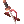

Mathy's Starter WC RK Guide
Overview
Why this guide exists.
Cause sometimes newbs on RO don't understand what is going on when they see the big in depth guides and all they want is a simple list of what to do. If you are already a experienced RO player i recommend you to check Leinarth's Rune knigh guide. There you will see different builds and options of gear for each build (https://www.novaragnarok.com/wiki/Leinarth%27s_Rune_Knight_Class_Guide).
Step 1 - Okay, I am rune knight, what now?
Windcutter is a popular Build with newbies due to the cheap cost of its basic components and that's what you are looking for now. If you collect and sold all the trash you droped during your levelling process, you probably already have some money. If you don't, keep saving until you can afford everything on this basic list (is pretty cheap!).
Gears
Top Headgear:  Rideword Hat, It will give you leach on both SP and HP, is very usefull during the leveling process and farming
Rideword Hat, It will give you leach on both SP and HP, is very usefull during the leveling process and farming
Mid headgear: Don't worry about this yet, it's an expensive item. It should be you last priority.
Lower Headgear: Blood Sucker/ Rosary In Mouth /
Rosary In Mouth /  Gangster Scarf
Gangster Scarf
Armor:  Peuz's Plate, +20 ATK use with the rest of the set, gives +10% to ALL damage +100% damage with Windcutter and Sonic wave +2 Flat ASPD with Concentration
Peuz's Plate, +20 ATK use with the rest of the set, gives +10% to ALL damage +100% damage with Windcutter and Sonic wave +2 Flat ASPD with Concentration
Weapom:  Thanatos GreatSword: it will give you HP leach it can be enchanted, and has a slot besides a nice atk of 280
Thanatos GreatSword: it will give you HP leach it can be enchanted, and has a slot besides a nice atk of 280
Garment: Peuz's Manteau: For the combo with the armor
Boots: Peuz's Greaves For the combo with the armor, has a slot
Recommended Status
- STR 120
- AGI is up to you and how much aspd you want to have. The cap is 193 but Windcutter just needs 190.
- VIT 120
- INT 100
- DEX 100
- LUK 1
Skills
Swordsman
- Two Handed-Sword Mastery 10
- Incrase HP recovery 10
- Bash 10
- Magnum Break 10
- Provoke 5
- Endure 1
Knight and Lord Knight
- Two Handed Quicken 10
- Auto counter 5
- Bowling bash 10
- Paring 10
- Cavalry Mastery 5
- Aura Blade 5
- Concentration 5
- Berserk 1
Rune Knight
- Rune Mastery 10
- Dragon Training 5
- Enchanted Blade 10
- Windcutter 5
Step 2 - Runes, the Bread and butter of a RK, those are the ones you want while playing WC
 Turisus: This rune will give you an amazing +30 STR while also increasing your melee atk damage by 250%! And as a cherry on top it also has a chance that one of your auto hits will give 2.5 the damage it was supposed to do.
Turisus: This rune will give you an amazing +30 STR while also increasing your melee atk damage by 250%! And as a cherry on top it also has a chance that one of your auto hits will give 2.5 the damage it was supposed to do.
 Hagalas: this rune will take 25% of your HP and make it into a shield that has the Sacrificed HP and when a enemy hits you, there is a chance he will break his weapon, or in the case of a monster, reduce its damage by 25% (doesn't work on bosses)
Hagalas: this rune will take 25% of your HP and make it into a shield that has the Sacrificed HP and when a enemy hits you, there is a chance he will break his weapon, or in the case of a monster, reduce its damage by 25% (doesn't work on bosses)
 Asir: gives you +70 flat atk also gives a Flat ASPD bonus, that increases based on Rune mastery skill level
Asir: gives you +70 flat atk also gives a Flat ASPD bonus, that increases based on Rune mastery skill level
 Urj: will restore 60 SP every 10 seconds
Urj: will restore 60 SP every 10 seconds
Verkana: will create barriers around you that have 1k life each. It's not much, it wont protect you from damage in the long run, but due to having its own life bar and not being a extension of yours, it means that no matter how much damage you take in a single hit, it wont hurt you, that damage will be sent directly to the rune. So, for example, if you are facing a boss, it gives you 3 free boss hits before you start taking damage.
 Lux Anima: its yellow and shiny cause is expensive. It will give you 60% more damaged divided in 2 diferent 30% damage modifiers and a 15% chance to proc Strom blast in a Melee physical atk. It will also give a 30% max HP and SP increase.
Lux Anima: its yellow and shiny cause is expensive. It will give you 60% more damaged divided in 2 diferent 30% damage modifiers and a 15% chance to proc Strom blast in a Melee physical atk. It will also give a 30% max HP and SP increase.
Note: Runes can fail depending on your rune mastery level, so put high priority on getting Rune mastery lv 10
Advanced WC builds
If you chose to keep the path of windcutting you will need better gear, This is what i recommend for midgame Windcutter (its all about ACD)
Top: Black Ribbon, once you remove Peuz set, this is your damage, there is no arguments here, you are getting this if you want to remove the peuz
Mid:  New Wave Sunglasses, will give you 10% acd, what is exactly what you are looking for
New Wave Sunglasses, will give you 10% acd, what is exactly what you are looking for
Lower: Here can you can chose either a Rosary In Mouth, or a Blood Sucker for leach, or just carry both around, if you can afford it
Armor:  +9 Illusion Armor A-type, with the enchants ATK ATK ACD, will give you 15% acd, 200 atk and has a combo with the garment for 10% acd
+9 Illusion Armor A-type, with the enchants ATK ATK ACD, will give you 15% acd, 200 atk and has a combo with the garment for 10% acd
Weapon:  +9 Tae Goo Lyeon or  +9 Illusion Tae Goo Lyeon, both HAVE to be +9 for the ACD or is pointless to have it, It doesn't matter which one you pick both have advantages and disadvantages, The Ilu one can be enchanted for extra of 5% acd on illusion enchants, and the normal one can receive ATK bonus from malangdo enchant,
+9 Illusion Tae Goo Lyeon, both HAVE to be +9 for the ACD or is pointless to have it, It doesn't matter which one you pick both have advantages and disadvantages, The Ilu one can be enchanted for extra of 5% acd on illusion enchants, and the normal one can receive ATK bonus from malangdo enchant,
Garment:  Illusion Engine Wing B-type FAST FAST ABOVE ALL, ASPD will be important for the spam too, this Fast enchants have it covered after +7 the above all will give you some resistance and the wing itself will combo with the armor for a extra 10% acd
Illusion Engine Wing B-type FAST FAST ABOVE ALL, ASPD will be important for the spam too, this Fast enchants have it covered after +7 the above all will give you some resistance and the wing itself will combo with the armor for a extra 10% acd
Boots:  +7 Illusion Leg A-type Mental OVERPOWER!, Those boots are here due to the Overpower enchant, that has a hing chance to proc and will give you a 15% extra damage on top of extra STR
+7 Illusion Leg A-type Mental OVERPOWER!, Those boots are here due to the Overpower enchant, that has a hing chance to proc and will give you a 15% extra damage on top of extra STR
Acc1:  Sarah's Right Earring with 10% ACD reduction, i mean, thats exactly what you want
Sarah's Right Earring with 10% ACD reduction, i mean, thats exactly what you want
Acc2:  Sarah's Left Earring You can go for another Sarah's, or a KSS with Strong and a
Sarah's Left Earring You can go for another Sarah's, or a KSS with Strong and a  Chaotic Acolyte Card
Chaotic Acolyte Card
Endgame Windcutter Build
Top: +7 Black Ribbon
Mid: New Wave Sunglasses 10% acd
Lower:  Vicious Mind Aura, Overpowered combo with Fallen Warrior Manteau
Vicious Mind Aura, Overpowered combo with Fallen Warrior Manteau
Armor: +10 Illusion Armor A-type, STR STR ACD
Weapon:  +16 Claw Sword, Too good to fit in one line
+16 Claw Sword, Too good to fit in one line
Garment: +12 Fallen Warrior Manteau, Overpowered combo with Vicious Mind Aura
Boots:  +9 Temporal Boots Of Strength, Fighting Spirit Bear's might, Lots of damage Lots of STR, Overpowered combo with the KSS
+9 Temporal Boots Of Strength, Fighting Spirit Bear's might, Lots of damage Lots of STR, Overpowered combo with the KSS
Acc1: Sarah's Right Earring, 10% acd
Acc2:  King Schmidt's Strong Insignia, STR4 FS4 Strong, 25% extra damage when equipped with a boot enchanted with Bear's might
King Schmidt's Strong Insignia, STR4 FS4 Strong, 25% extra damage when equipped with a boot enchanted with Bear's might
Notes
This guide is open to anyone to edit (please only do so with good intentions!) if you change anything for the better (such as adding links, placing a different equip in the list when you proved is better or just fixing spelling mistakes feel free to ADD your name down here :)
Credits:
- Mathy - I wrote this guide!
- Tuna - someone who added some sections and formatted the text a bit
- Pikachuzinha - I added links